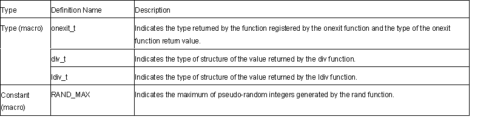

<stdlib.h>
Defines standard functions for standard processing of C program.
The following macros are implementation-defined.

double atof(const char *nptr)
Description: Converts a number-representing string to a double type floating point number.
Header file: <stdlib.h>
Return values: Converted data as a double type floating point number
Parameters: nptr Pointer to a number-representing string to be converted
Example: #include <stdlib.h>
const char *nptr;
double ret;
ret=atof(nptr);
Remarks: Data is converted up to the first character that does not fit the floating point data type.
The atof function sets no errno even if an error such as an overflow occurs. If an error occurs, the result will be undefined. When there are probabilities of a conversion error, use the strtod function.
int atoi(const char *nptr)
Description: Converts a decimal-representing string to an int type integer.
Header file: <stdlib.h>
Return values: Converted data as an int type floating point number
Parameters: nptr Pointer to a number-representing string to be converted
Example: #include <stdlib.h>
const char *nptr;
int ret;
ret=atoi(nptr);
Remarks: Data is converted up to the first character that does not fit the decimal data type.
The atoi function sets no errno even if an error such as an overflow occurs. If an error occurs, the result will be undefined. When there are probabilities of a conversion error, use the strtol function.
long atol(const char *nptr)
Description: Converts a decimal-representing string to a long type integer.
Header file: <stdlib.h>
Return values: Converted data as a long type integer
Parameters: nptr Pointer to a number-representing string to be converted
Example: #include <stdlib.h>
const char *nptr;
long ret;
ret=atol(nptr);
Remarks: Data is converted up to the first character that does not fit the decimal data type.
The atol function sets no errno even if an error such as an overflow occurs. If an error occurs, the result will be undefined. When there are probabilities of a conversion error, use the strtol function.
double strtod(const char *nptr, char **endptr)
Description: Converts a number-representing string to a double type floating point number.
Header file: <stdlib.h>
Return values: Normal: If the string pointed by nptr is beginning with a character that
does not represent a floating point number: 0
If the string pointed by nptr is beginning with a character that represents a floating point number: converted data as a double type floating point number
Abnormal: If the converted data overflows: HUGE_VAL with the same sign as that of the string to be convertedIf the converted data underflows: 0
Parameters: nptr Pointer to a number-representing string to be convertedendptr Pointer to the address containing a pointer to the first character that does not represent a floating point number
Example: #include <stdlib.h>
const char *nptr;
char **endptr;
double ret;
ret=strtod(nptr, endptr);
Error conditions:
If the converted result overflows or underflows, ERANGE is set for errno.
Remarks: According to the C language specification rules, the strtod function converts data, from the first character or the decimal point up to the character immediately before the character that does not represent a floating point number, into a double type floating point number. However, if neither the exponent nor decimal point is found in the data to be converted, it is assumed that the decimal point comes next to the last numeral in the string. In the address pointed by endptr, this function sets up a pointer to the first character that does not consist a floating point number. If some characters that do not consist a floating point number come before numerals, the value of nptr is set in this address. If endptr is NULL, nothing is set in this address.
long strtol(const char *nptr, char **endptr, int base)
Description: Converts a number-representing string to a long type integer.
Header file: <stdlib.h>
Return values: Normal: If the string pointed by nptr is beginning with a character that
does not represent an integer: 0If the string pointed by nptr is beginning with a character that represents an integer: Converted data as a long type integer
Abnormal: If the converted data overflows: LONG_MAX or LONG_MIN depending on the sign of the string to be converted
Parameters: nptr Pointer to a number-representing string to be convertedendptr Pointer to the storage area containing a pointer to the first character that does not represent an integerbase Radix of conversion (0 or 2 to 36)
Example: #include <stdlib.h>
long ret;
const char *nptr;
char **endptr;
int base;
ret=strtol(nptr, endptr, base);
Error conditions:
If the converted result overflows, ERANGE is set for errno.
Remarks: The strtol function converts data, from the first numeral to the first character that does not represent an integer, into a long type integer.
In the address pointed by endptr, this function sets up another pointer to the first character that does not represent an integer. If some characters that do not represent an integer come before the first numeral, the value of nptr is set in this address. If endptr is NULL, nothing is set in this address.
If the value of base is 0, C language specification rules are observed at conversion. If the value of base is 2 to 36, it indicates the radix of conversion, where a (or A) to z (or Z) in the string to be converted are corresponded to numbers 10 to 35. If a character that is not smaller than the base value is found in the string to be converted, conversion stops immediately. A 0 after a sign is ignored at conversion. Similarly, 0x (or 0X) at base 16 is ignored.
int rand ()
Description: Generates pseudo-random integers from 0 to RAND_MAX.
Header file: <stdlib.h>
Return values: Pseudo-random integers
Example: #include <stdlib.h>
int ret;
ret=rand();
void srand(unsigned int seed)
Description: Sets an initial value of the pseudo-random number series generated by the rand function.
Header file: <stdlib.h>
Parameters: seed Initial value for pseudo-random number series generation
Example: #include <stdlib.h>
unsigned int seed;
srand(seed);
Remarks: The srand function sets up an initial value for pseudo-random number series generation of the rand function. While pseudo-random number series generation by the rand function is ongoing, if the same initial value is set up again by the srand function, the same pseudo-random number series is repeated.
If the rand function is called before the srand function, 1 is set as the initial value for the pseudo-random number generation.
void *calloc(size_t nelem, size_t elsize)
Description: Allocates storage areas and clears all bits in the allocated storage areas to 0.
Header file: <stdlib.h>
Return values: Normal: Starting address of allocated storage area
Abnormal: If storage allocation failed, or if either of the parameter is 0: NULL
Parameters: nelem Number of elementselsize Number of bytes occupied by a single element
Example: #include <stdlib.h>
size_t nelem, elsize;
void *ret;
ret=calloc(nelem, elsize);
Remarks: The calloc function allocates as many storage areas as specified by nelem, in as many units of bytes as specified by elsize. The function also clears all the bits in the allocated storage area to 0.
void free(void *ptr)
Description: Releases specified storage area.
Header file: <stdlib.h>
Parameters: ptr Address of storage area to release
Example: #include <stdlib.h>
void *ptr;
free(ptr);
Remarks: The free function releases the storage area pointed by ptr, to enable reallocation for use. If ptr is NULL, the function carries out nothing.
If the storage area attempted to release was not allocated by the calloc, malloc, or realloc function, or if the area has been already released by the free or realloc function, operation will be undefined. Operation result of referencing an already released storage area is also undefined.
void *malloc(size_t size)
Description: Allocates storage area.
Header file: <stdlib.h>
Return values: Normal: Starting address of allocated storage area
Abnormal: If storage allocation failed, or if size is 0: NULL
Parameters: size Size in number of bytes of storage area to allocate
Example: #include <stdlib.h>
size_t size;
void *ret;
ret=malloc(size);
Remarks: The malloc function allocates a storage area of a specified number of bytes by size.
void *realloc(void *ptr, size_t size)
Description: Changes the size of a storage area to a specified value.
Header file: <stdlib.h>
Return values: Normal: Starting address of size-changed storage area
Abnormal: If storage area allocation failed, or if size is 0: NULL
Parameters: ptr Starting address of storage area to be changed
size Size of storage area in number of bytes after the change
Example: #include <stdlib.h>
size_t size;
void *ptr, *ret;
ret=realloc(ptr, size);
Remarks: The realloc function changes the size of a storage area specified by ptr to the number of bytes specified by size. If the newly allocated storage area is smaller than the old one, the contents are left unchanged up to the size of the newly allocated area.
void *bsearch(const void *key, const void *base, size_t nmemb, size_t size,
int (*compar)(const void *, const void *))
Description: Performs binary search.
Header file: <stdlib.h>
Return values: If a matching member is found: pointer to the matching member
If no matching member is found: NULL
Parameters: key Pointer to data to search forbase Pointer to a table to searchnmemb Number of members to search forsize Number of bytes of a member to search forcompar Pointer to a function that performs comparison
Example: #include <stdlib.h>
const void *key, *base
size_t nmemb, size;
int (*compar)(const void *, const void *);
void *ret;
ret=bsearch(key, base, nmemb, size, compar);
Remarks: The bsearch function searches the table specified by base for a member that matches the data specified by key, by binary search method. The function that performs comparison should receive pointers p1 (first parameter) and p2 (second parameter) to two data to compare, and return the result complying with specifications below.
If *p1<*p2, return a negative value.
If *p1==*p2, return 0.
If *p1>*p2, return a positive value.
Members to search must be placed in the ascending order.
void qsort(const void *base, size_t nmemb, size_t size,
int (*compar)(const void *, const void*))
Description: Performs sorting.
Header file: <stdlib.h>
Parameters: base Pointer to the sort target tablenmemb Number of members to sortsize Number of bytes of a member to sortcompar Pointer to a function to perform comparison
Example: #include <stdlib.h>
const void *base;
size_t nmemb, size;
int (*compar)(const void *, const void *)
qsort(base, nmemb, size, compar);
Remarks: The qsort function sorts out data on the table specified by base. The data arrangement order is specified by the pointer to a function to perform comparison. This comparison function should receive pointers p1 (first parameter) and p2 (second parameter) to two data to compare, and return the result complying with specifications below.
If *p1<*p2, return a negative value.
If *p1==*p2, return 0.
If *p1>*p2, return a positive value.
int abs(int i)
Description: Calculates the absolute value of an int type integer.
Header file: <stdlib.h>
Return values: Absolute value of i
Parameters: i Integer to calculate the absolute value of
Example: #include <stdlib.h>
int i, ret;
ret=abs(i);
Remarks: If the result cannot be expressed as an int type integer, operation will be
undefined.
div_t div(int numer, int denom)
Description: Carries out division of int type integers and obtains the quotient and remainder.
Header file: <stdlib.h>
Return values: Quotient and remainder of division of numer by denom
Parameters: numer Dividenddenom Divisor
Example: #include <stdlib.h>
int numer, denom;
div_t ret;
ret=div(numer, denom);
long labs(long j)
Description: Calculates the absolute value of a long type integer.
Header file: <stdlib.h>
Return values: Absolute value of j
Parameters: j Integer to calculate the absolute value of
Example: #include <stdlib.h>
long j;
long ret;
ret=labs(j);
Remarks: If the result cannot be expressed as an long type integer, operation will be undefined.
ldiv_t ldiv(long numer, long denom)
Description: Carries out division of long type integers and obtains the quotient and remainder.
Header file: <stdlib.h>
Return values: Quotient and remainder of division of numer by denom
Parameters: numer Dividenddenom Divisor
Example: #include <stdlib.h>
long numer, denom;
ldiv_t ret;
ret=ldiv(numer, denom);